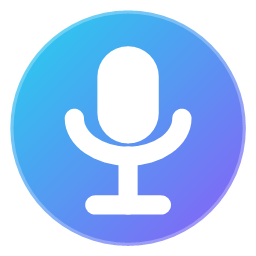

远控听写 RemoteDictation
用 Windows 远程控制 Mac 时，也能用本机的语音输入法。
在 ToDesk / UU 远程画面里按住语音键说话，松开后文字自动出现在 Mac 的输入框里。推荐搭配豆包输入法。免费开源。
解决什么问题
桌上是 Windows，干活却要远程到 Mac（Mac mini、公司的 Mac、跑 AI 工具的 Mac）。在 Windows 上用惯了豆包语音输入，一进远控画面就用不了：
按语音键没反应
远控软件在前台时把键盘整个接管，输入法收不到按键。
字进不了 Mac
本机识别出来的文字只在本机，到不了 Mac 的输入框。
键位对不上
ToDesk 是 Ctrl→Command，UU 远程是 Win→Command，粘贴键各不相同。
怎么用
- 下载后右键“以管理员身份运行”一次，在设置里勾选“开机自动启动”。之后它在托盘里安静运行。
- 在远控画面里点好 Mac 上的输入框。
- 按住语音键（豆包默认左 Alt）说话，说完松开。
- 输入法整理完文字后，自动粘贴到 Mac。只粘贴，不会替你发送。
支持的远控软件和输入法
| 远控软件 | 状态 |
|---|---|
| ToDesk | 已实测（Windows → Mac） |
| 网易 UU 远程 | 已实测，自动跟随 UU 的按键映射（推荐） |
| 向日葵、RustDesk、AnyDesk、TeamViewer、Parsec、Windows 远程桌面、VNC、Splashtop、NoMachine | 内置识别，欢迎反馈 |
| 其他远控软件 | 托盘菜单一键添加 |
输入法：任何“按住某个键说话、松开出字”的语音输入法都能用，推荐豆包输入法（自动读取它的语音键）。
常见问题
Windows 用 ToDesk / UU 远程控制 Mac，按豆包语音键没反应怎么办？
远控软件在前台时会用低级键盘钩子把按键全部拦下来发给远端，本机输入法收不到。装上远控听写后，按住语音键时它先拿到按键、切到本机听写浮窗交给输入法，识别完自动贴到 Mac。
远程桌面里能用本机的语音输入法吗？
能。本机输入法在本机完成识别，再借远控软件的剪贴板同步把文字贴进远端输入框，相当于本机说话、远端出字。
UU 远程控制 Mac 时 Ctrl+V 粘贴不了？
UU 默认把 Win 键映射成 Command，要用 Win+V；ToDesk 是 Ctrl→Command。远控听写会读取 UU 的映射，其他软件首次粘贴时自动试出正确的粘贴键并记住。
按住 Alt 说话为什么以前要按两次？
按住 Alt 只有一次“按下”，被远控软件先拿走后输入法就等不到了。远控听写在按下送达前就切到本机浮窗，按一次即可。
会自动发送、上传语音或弄丢剪贴板吗？
都不会：只发粘贴键不按回车；不录音不联网；粘贴前完整备份剪贴板，粘贴后自动还原。
Mac 控制 Mac 能用吗？
本项目只做 Windows 控制端。Mac 控制 Mac 请用原项目 DoubaoVoiceBridge。